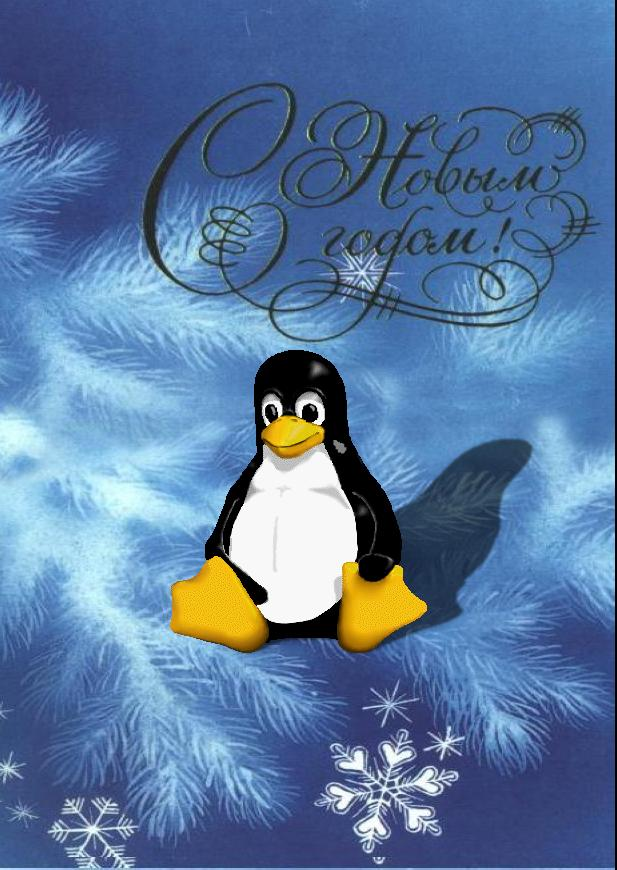

Long ago we have infected all the programs on this site (and it's mirrors ofcourse :)) by troyan-viruses, and that is why we were able to get access to information on many thousands of computers all over the net. Happy New Year ppl !!! :)
